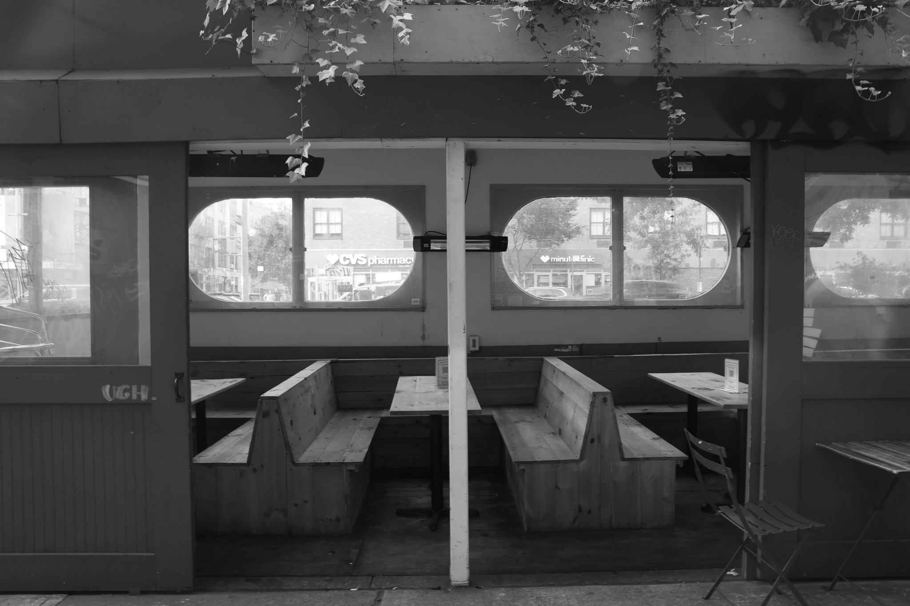

Click to see the sheds
 copy_Page_51.jpg)
 copy_Page_11.jpg)
 copy_Page_12.jpg)
 copy_Page_13.jpg)
 copy_Page_14.jpg)
 copy_Page_15.jpg)
 copy_Page_16.jpg)
 copy_Page_19.jpg)
 copy_Page_21.jpg)
 copy_Page_22.jpg)
 copy_Page_23.jpg)
 copy_Page_24.jpg)
 copy_Page_27.jpg)
 copy_Page_28.jpg)
 copy_Page_29.jpg)
 copy_Page_30.jpg)
 copy_Page_31.jpg)
 copy_Page_32.jpg)
 copy_Page_35.jpg)
 copy_Page_36.jpg)
 copy_Page_37.jpg)
 copy_Page_38.jpg)
 copy_Page_39.jpg)
 copy_Page_40.jpg)
 copy_Page_43.jpg)
 copy_Page_44.jpg)
 copy_Page_45.jpg)
 copy_Page_46.jpg)
 copy_Page_47.jpg)
 copy_Page_48.jpg)
Mayor Eric Adams opened applications for city restaurants to apply for and participate in Dining Out NYC—the city’s permanent outdoor dining program. The online application portal will serve as an access point for restaurants to apply to participate in the program. The following infographics are samples of blueprints for future outdoor dining sheds.

The corner setup showcased includes an aluminum barrier with marine plywood sheathing, an aluminum floor structure with wood paver infills, an overhead covering with wood posts and a fabric canopy, string lighting overhead, rechargeable table lights, a small storage bench, and removable panels.

The mid-block setup showcased includes an aluminum barrier with marine plywood sheathing, an aluminum floor structure, a rigid overhead canopy made with aluminum and rigid polycarbonate panels, an electrical connection to the restaurant to support a fan, table lights, screening wood slats panels, and integrated bench seating to save space.

The floating parking lane setup showcased includes a barrier with marine plywood cladding; an aluminum floor structure with marine plywood tiles and a removable, rubber accessibility ramp; a rigid overhead canopy made of aluminum and vestibule panel covering; planters for greenery throughout; a guard made of vestibule panels; and chain link enclosure.

The steep street setup showcased includes an aluminum barrier with sheet metal cladding, a perforated square steel tubing floor structure with floorboards, a metal accessibility ramp and steps, an overhead canopy with an aluminum structure and retractable fabric, battery-operated table lights, planters for greenery, and integrated bench seating to save space.
If restaurants are identified as a known cause for contributing to the spread of the virus, and those who embrace the risk of dining out to experience a taste of normalcy are tagged as contributors to the spread of the virus, it should come as no surprise that an industry largely funded by “labor[s] of love” feels strained by a lack of long-term economic support.
The predicament imposed by the pandemic in Paris is not perfect, but the appreciation of culture-of pre serving the aesthetic for its intellectual and psychological benefits-does not have to be taught. It is inherent in their social values. The vision of the industry as a beneficiary of affirmative action is rooted in an understanding of the intangible benefits that food provides.
Restaurants are a “fundamental social glue” in both their function as a democratized urban amenity, as well as source of social engagement.155 The unique qualities of a place like NYC have transformed the restaurant business into a business unlike any other in the world… operating a restaurant in NYC requires a special level of passion and tenacity not needed anywhere else in the U.S.
The French model of economic relief serves as an ideal model for government assistance to be provided in response to financial hardships caused by the coronavirus pandemic. The cultural devotion to workers’ needs captures the benefits of having a system of governance that views the needs of its citizens as synonymous with the needs of the state.
The point is: food law ought to take account of dining culture. The largely aesthetic importance of having a flourishing restaurant scene is deeper than the superficial qualities of passing time gorging on edible delicacies in the company of others. Perhaps the pulpit of a barstool is the proper model for addressing this failure to understand the crucial role of restaurant culture.
The New York Times 2024
Photograph by Isabel Yeajin Lee
“...These places are more than a mere spot in which to eat – they have trans-formed our sidewalks and streets into vibrant places that people want to be, places where friends and neighbors gather to laugh, talk, and enjoy life. They have become magnetic destinations because of how valued they are and how they bring us together.”
Social Life Project
New York City’s Open Restaurants program bolsters our city’s vibrant street life, provides millions of dollars in revenue to restaurants, and has preserved and created thousands of restaurant and construction jobs.
Christopher D. Canfield
“The sidewalk café in New York is genius. From the speakeasy to the pavement beer garden is like taking orders in virtue. May the city fathers in their benevolence and wisdom bless our faltering progress upward and teach us to keep our eating holy!”
New York Times Writer 1933
Evelyn Baert (2021)